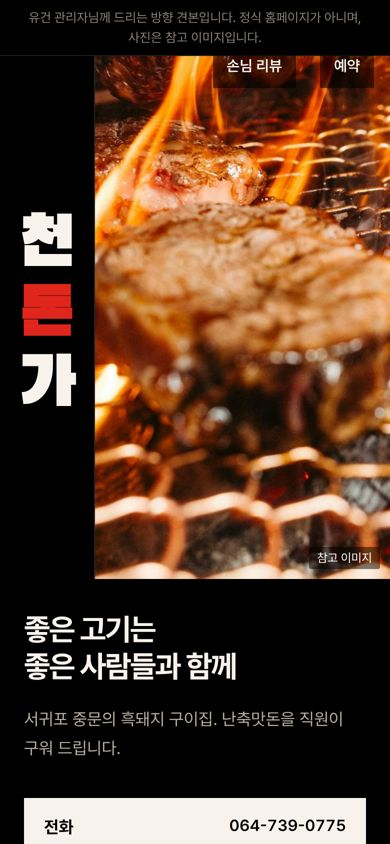
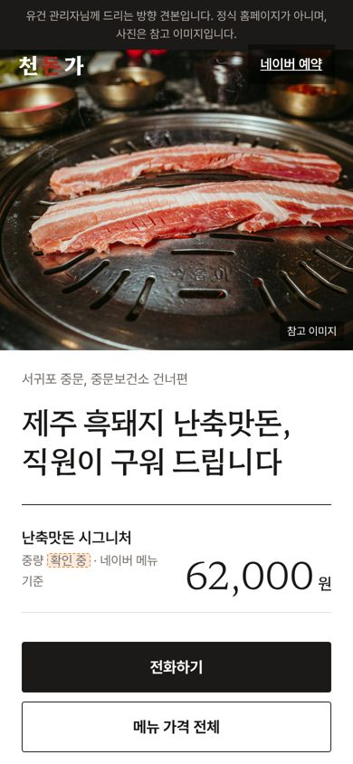
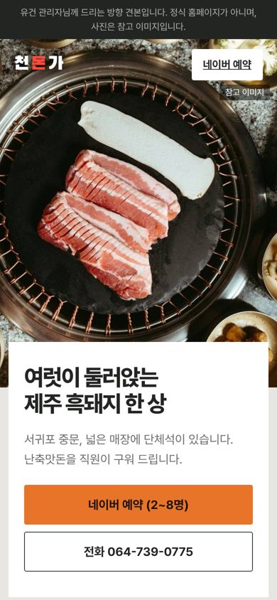

"글씨·배치가 싸 보인다"고 하셔서 새로 만들었어요. 휴대폰 첫 화면 그대로예요. 눌러서 직접 보시고 하나 골라 주세요. 사진은 모두 참고 이미지예요.

A. 세로 간판실제 간판처럼 "천돈가"를 세로로 크게. 간판 문구가 제목이고, 손님 리뷰를 큰 글씨로 보여 줘요.눌러서 보기 →
B. 고기와 가격 · 추천흰 바탕, 고기 사진이 화면 반. 명조 숫자로 시그니처 가격을 크게 보여 "바가지 걱정"을 먼저 풀어요.눌러서 보기 →
C. 둘러앉는 한 상위에서 내려다본 한 상 사진에 흰 판을 겹쳐 글. 가족·단체 손님용, 가기 전에 알 것을 표로.눌러서 보기 →유건 관리자님께 드리는 견본입니다. 정식 홈페이지가 아닙니다. · 2026-10-23